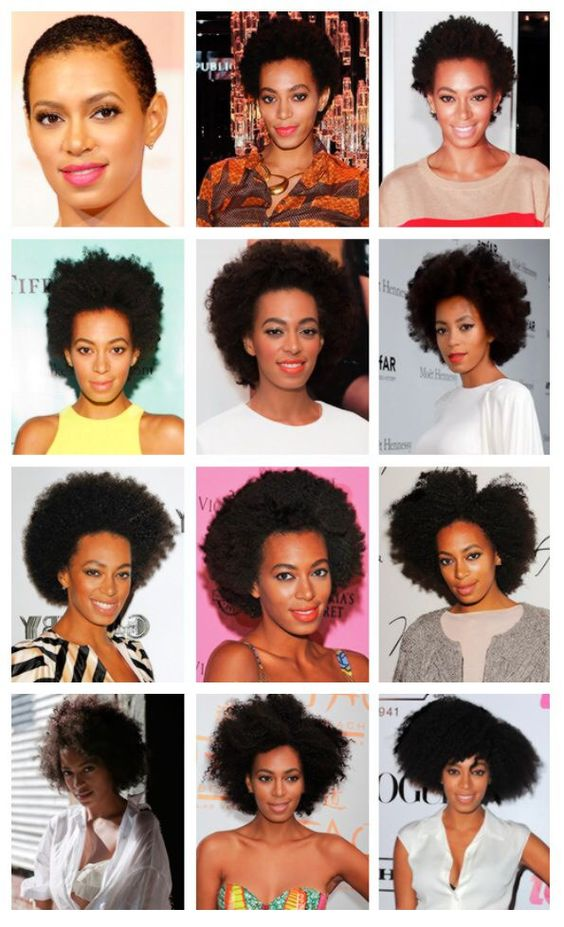

I officialy joined the natural hair community in 2017 when i was in grade 7 when i started being aware,learning how my hair is and therfore how to take care of it.So throughout my 5 year rollercoaster journey i have gone through horrible damage and breakage, 1 big chop ,thinning of hair and a whole lot more which i can probably write a book on (excuse the hyperbole).Even though ive had my downs i have aalso had my highs where my hair was flourishing , healthy and Frothentic to the point where my friends and family would alwasys ask me to help them by giving them tips and advice in how to take care of their hair so that it can become healthy and be able to retain length.So be optamistic and enjoy YOUR journey and its stages.
PS - im using this image because i dint take pictures during my journy so i do advise you that you take pictures of your journey so that you can reflect years from then.